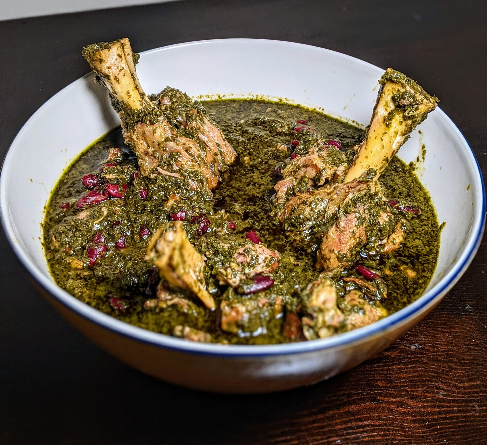

Yummy Gormeh Sabzi

Discription
Ghormeh sabzi is hands down my favorite Persian stew! For anyone that
hasn’t tried Persian food before, this is a great introduction to one of
the many stews that you will find in the cuisine. Ghormeh sabzi showcases
a lot of traditional Persian flavors, from the fragrant fresh herbs, to
the fatty, savory lamb shank, and finally the punch of tart lemon that
delights the tastebuds.I cannot recommend this dish enough and it is
certainly worth the time you put into it. What’s nice about this dish is
there are several steps that can be done over the course of the day and it
does not require constant attention in the kitchen. The recipe below
serves 5-6 people, please let me know how this goes for you and what you
think!
Ingridients:
- Meat
- Kindney Beans
- Parsley, Cilantro, Chives and Fenugreek
- Rice
- Dried lime
Steps:
- If using dried kidney beans, soak them in water for 3 to 8 hours.
-
Wash the herbs and dry them thoroughly. Chop them finely and set aside.
-
Heat vegetable oil in a large pan and once it's hot, saute herbs for
about 15 minutes, until they are a bit dark in color and aromatic. Turn
the heat off and set the herbs aside.
-
Heat vegetable oil in a large pot and saute onion until golden brown.
Add in the lamb and the turmeric. Cook for about 5-7 minutes, stirring
occasionally until the lamb is seared on all sides.
-
Add in water, and bring it to simmer. Rinse the soaked beans and add
them to the lamb (check our information below on using canned beans).
Cover and cook for 30 minutes.
-
Add in sauteed herbs to the stew. Cover and cook for another 1 to 1 ½
hours, until the lamb and beans are fully cooked.
-
Pierce the dried limes using a fork and add them to the stew. Season
with salt and pepper. Cover and cook for another 15 minutes.
- Serve warm with rice.
Home Page